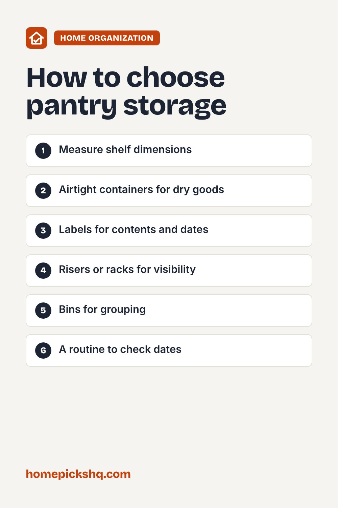

Best Pantry Storage: Containers, Shelves, and Layout Tips

How we write these guides: we research manufacturer specifications, expert guidance, and owner feedback. We do not claim to have lab-tested every product. Links to Amazon on this page are affiliate links; see our disclosure.
A well-organized pantry saves money by showing you what you have and keeping food fresh. You do not need a full renovation, just a few smart storage pieces. Here is how to plan a pantry that works.
Browse pantry storage on Amazon
Measure shelf depth and height
Before buying, measure the depth, width, and height of every shelf. Adjustable shelves give flexibility. Check the dimensions of any container, because round containers waste space compared with square ones.
Airtight containers
Store flour, sugar, rice, pasta, and cereal in airtight containers to keep them dry and protect against pantry pests. Clear containers let you see what is inside. Use a scoop and label each container with the contents and, if you like, the expiration date.
Shelf risers, racks, and bins
Risers create a second level so cans and jars are visible. Can racks keep cans in order. Bins group items like snacks, baking supplies, and packets, and make it easy to pull a whole category out at once.
Lazy Susans and deep shelves
Turntables make corner and deep shelves usable by letting you spin items into reach. Pull-out drawers work well in deep pantries where items get lost at the back.
Rotation and upkeep
Use first in, first out: put newer items behind older ones. Check dates every few months, wipe shelves, and keep a short list of staples so you do not overbuy.
Quick buying checklist
- Measure shelf dimensions
- Airtight containers for dry goods
- Labels for contents and dates
- Risers or racks for visibility
- Bins for grouping
- A routine to check dates
See pantry storage on AmazonUse the checklist above to compare options. As an Amazon Associate I earn from qualifying purchases.

Frequently asked questions
Do I need to decant everything?
No. Decant items you buy in bulk or that go stale, such as flour and cereal.
How do I keep pests out?
Use sealed containers, clean up crumbs, and inspect packages when you bring them home.
What is the best container shape?
Square or rectangular containers use space more efficiently than round ones.